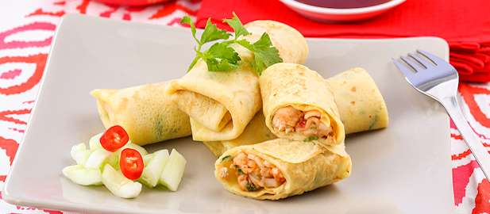

Bahan-bahan
- 1 sdm minyak goreng
- 2 buah bawang merh, haluskan
- 1 siung bawang putih, haluskan
- 50 gr daging ayam, potong dadu
- 100 gr udang kupas, cincang kasar
- 50 gr wortel, serut hingga sepanjang batang korek api
- 25 gr toge, siangi
- 1 sdm air
- 1 sdm daun bawang iris halus
- 1/2 sdt garam
- 1/4 sdt merica bubuk
- 1/2 sdm kecap manis Bango
- 1 sdt gula palem
- 1 sdm minyak wijen
Cara Membuat
- Panaskan wajan. Masukkan sekaligus minyak goreng, bawang merah dan bawang putih. Tumis hingga harum.
- Tambahkan daging ayam dan udang. Masak hingga daging ayam dan udang berubah warna sambil di aduk.
- Masukkan wortel, toge dan air. Masak hingga wortel matang tetapi tetap renyah.
- Masukkan daun bawang, garam, merica, kecap Bango dan gula. Aduk sampai rata.
- Percikkan minyak wijen. Aduk satu kali, lalu angkat dari api.
- Siapkan kulit lumpia. Beri isian, gulung dan goreng sampai menguning. Lumpia udang sayur siap disajikan (untuk 8 porsi)